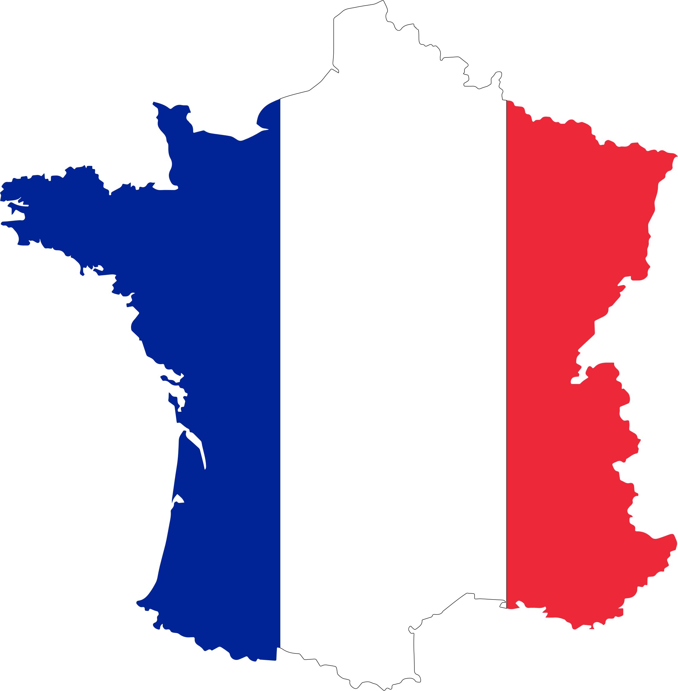
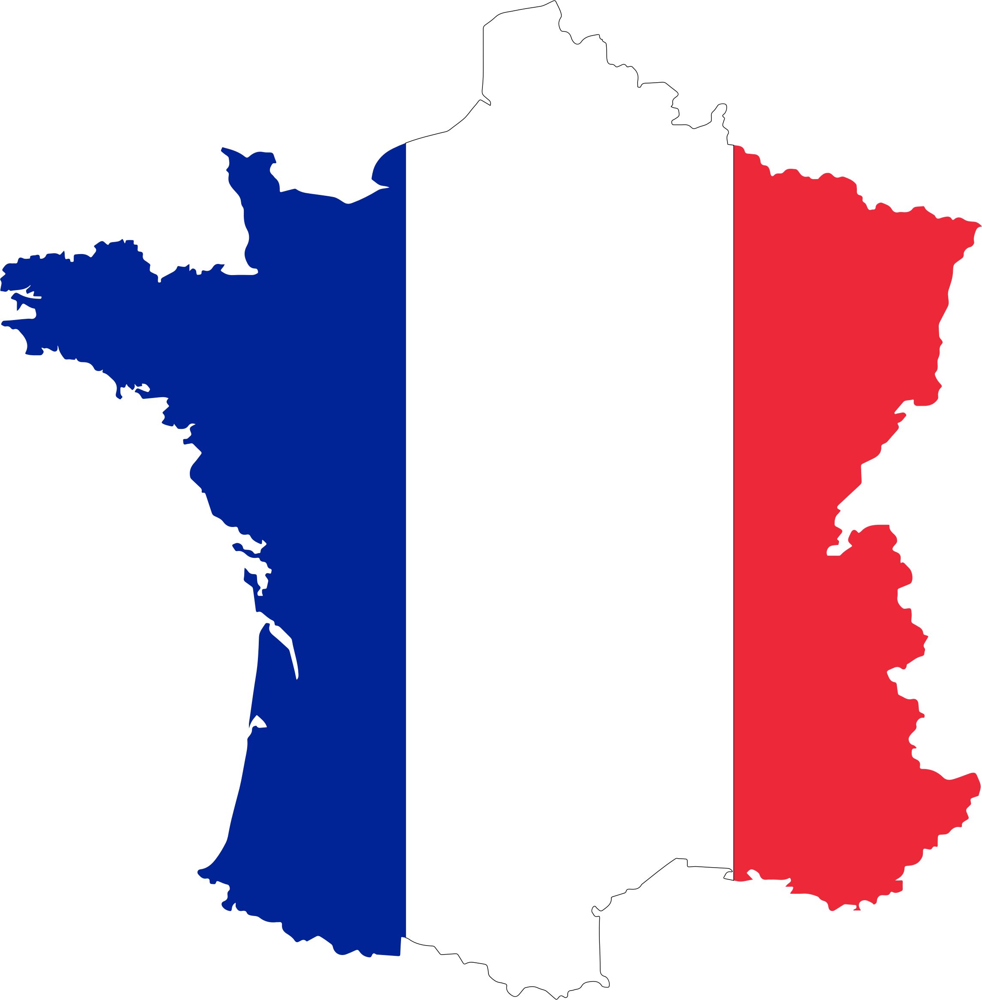

FRANCE


 

The most interesting place to visit in France is Mont-Saint Michel which is located in Normandy. We were there on an excursion from our school and it was such an experience to walk on the sinking sand. Mont-Saint Michel is a tidal island and mainland commune. Also, we visited the museum Louvre and saw Mona Lisa. After that we went to see the Eiffel Tower and walk down the avenue Champs Elysees. There are so many other places to visit in Paris such as Montmartre, Moulin Rouge etc.
↩ BACK TO MAP